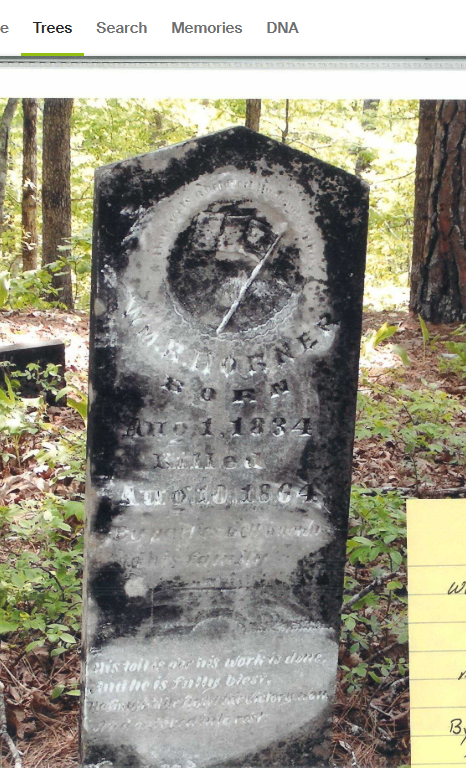
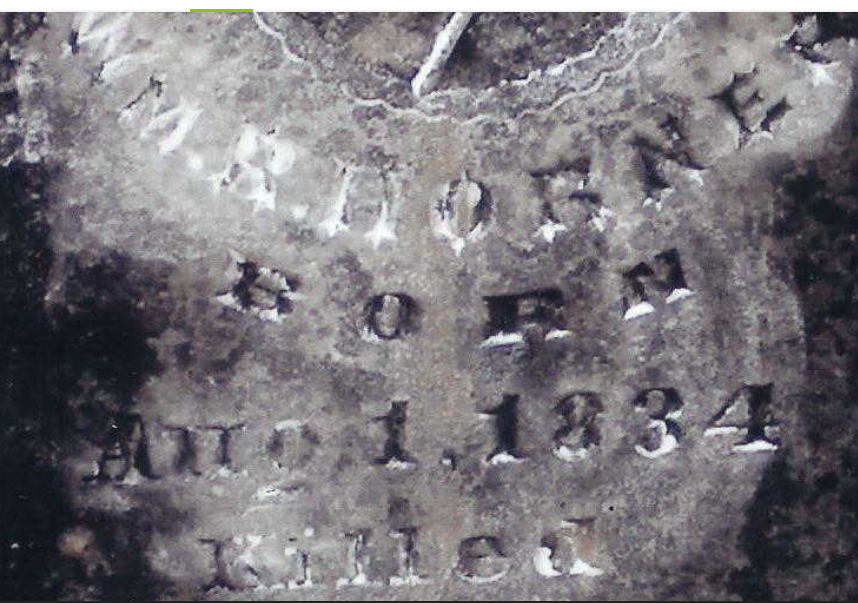

Johnson County Civil War Archive · Floyd Township, Arkansas
The Killing of John Spencer Horner
Floyd Township, Johnson County, Arkansas — August 2, 1864
Research: Daniel LingarDossier v. 13.0March 2026Clarksville, AR
§ 00
Origins — The Family Before Arkansas
The man who died in the potato patch on August 2, 1864 was not the beginning of the story. He was the end of a 186-year migration that began in Poland, moved through Germany, crossed an ocean, ran down the spine of colonial America, and finally came to rest in the Ozark hills of Johnson County, Arkansas.
The chain is documented. It runs without a break from a village in Silesia to a murder in a potato patch.
6th Great-Grandfather · b. 1678, Bodzanowice, Poland
Johann Georg Martin Horner
1678 – 1752 · Bodzanowice, Olesno, Opole, Poland → Orange County, North Carolina
The earliest confirmed ancestor. Born in what is now southern Poland. Died in North Carolina in 1752. The origin of the American Horner line.
5th Great-Grandfather · b. ~1699, Baden-Württemberg, Germany
Johannes Georg John Horner
~1699 – ~1751 · Windischenbach, Germany → North Carolina
Son of Johann Georg Martin. Settled in colonial North Carolina. Died ~1751.
4th Great-Grandfather · b. ~1726, Kent Island, Maryland
George Ransom Horner Sr.
~1726 – ~1794 · Maryland Colony → Orange County, North Carolina
Settled among the Scots-Irish frontier settlements of Orange County, NC. Appointed road overseer for the Eno River trading path, 1759. His 400-acre Virginia land grant was surveyed by George Washington in 1752. Died in North Carolina ~1794.
3rd Great-Grandfather · b. Oct 30, 1746, York County, Pennsylvania
William Horner Sr.
1746 – Oct 12, 1824 · York Co., PA → Randolph Co., NC → Jefferson Co., Tennessee
American Revolutionary War patriot. DAR #462142. Supplied beef and goods to the Continental Army. Family oral history states he hauled a four-horse wagon load of beef to General Washington at Valley Forge, winter 1777–1778. Deacon of Bent Creek Primitive Baptist Church. Buried Bent Creek Cemetery, Whitesburg, Tennessee, with a Revolutionary War marker.
2nd Great-Grandfather · b. 1771, Orange County, North Carolina
George Horner
1771 – Apr 15, 1822 · Orange Co., NC → Beardstown, Perry County, Tennessee
Son of William. Married Jemima Russell, 1795, Hickman County, Tennessee. Father of Spencer Horner. Died Perry County, Tennessee, April 1822 — when Spencer was approximately fourteen years old.
Great-Grandfather · b. ~1808, Dickson, Tennessee · MURDERED August 2, 1864
John Spencer Horner
~1808 – August 2, 1864 · Tennessee → Floyd Township, Johnson County, Arkansas
Irish and Cherokee by blood. Union man in a Confederate county. Married Permelia Turner (b. Nov 11, 1810, Maury County, TN; d. Aug 9, 1892). Father of eleven children. Shot in his potato patch by approximately twenty men he recognized as neighbors. The subject of this archive.
The Washington Connection, 1752. George Ransom Horner Sr. owned 400 acres in Frederick County, Virginia on the North River of Cacapehon — surveyed by the young George Washington on March 9, 1752, and granted by Thomas Lord Fairfax. The same day, Washington surveyed an adjacent 292 acres belonging to a William Horner, likely a relative. This document survives.
Northern Neck Proprietary Grant · George Horner · 400 acres · Frederick County, Virginia · March 9, 1752 · Surveyed by George Washington · Granted by Thomas Lord Fairfax
The family's path from that Virginia frontier to the Arkansas hills follows the great Scots-Irish migration routes exactly — down the Great Wagon Trail through the Shenandoah Valley, into the Piedmont of North Carolina, then west into Tennessee, then south and west into Arkansas. By the time Spencer Horner settled in Floyd Township, the family had been in America for over a century.
§ 01
The Attack
On the morning of August second, one of Spencer's sons — the one they called Louis — took his horse up the mountain to get it shod, five miles from the house. Before he left, he told his father and his brother William: whatever you do, don't go up to the house in the daytime. Stay back in the timber. Keep watch.
But the women were killing a chicken for dinner, and the house was where the food was. So Spencer and William went up anyway.
The children had been posted as lookouts — a common precaution in those years, when bushwhackers moved through the hills like weather. When the boys saw men coming off the mountain, they ran inside hollering: "Here they come, Grandpap!"
Spencer walked out into the potato patch to meet them. There were about twenty riders, and he recognized them. They were neighbors, men he knew by name. He raised his hands to surrender, but they shot him where he stood. He died immediately at the homestead.
William Riley Horner ran for the timber, but they caught him in the potato field. They beat him with pistols and crushed his genitals, leaving him for dead. The women found him still breathing and carried him to a cave on the mountainside. He survived there for eight days, nursed by Mary Ann, before dying of head wounds on August 10, 1864.

Full view of the stone at Moore Cemetery

Detail showing the misspelling “WM. R. HOMER”
"Wm. R. Homer Born Aug. 1, 1834 Killed Aug. 10, 1864 by parties known to his family."
His toil is o’er his work is done, And he is fully blest, He fought the fight the victory won, And entered into rest.
— Tombstone inscription, Moore Cemetery, Johnson County, Arkansas
The misspelling is cut into the stone just as they wrote it — "Homer" instead of "Horner." A public accusation in stone, because the law would do nothing.
§ 02
The Children Who Watched
In the house that day were Spencer's orphaned grandsons: John Samuel Acord, age 7, and Christopher Columbus Acord, age 3. Their mother Elizabeth Horner Acord had died March 1, 1864, of pneumonia — she'd spent her days chopping wood in the cold rain to keep the fire going while her husband was away, and it killed her at twenty-eight. She had been born July 10, 1835, in Perry County, Tennessee — the same county where her grandfather George Horner had died in 1822. Their father Francis made it home to learn his wife was dead, then went back to his unit and died at Lewisburg Ridge on July 28, 1864, from fever. The records confirm he died just five days before Spencer was murdered.
Spencer had retrieved the boys after Francis died. They had been at the farm approximately three months when the riders came.
Connection to the researcher: John Samuel Acord (born December 1, 1856; died March 20, 1928, Friley, Johnson County, Arkansas) is the 2nd great-grandfather of Daniel Lingar, who compiled this archive. This record exists because a seven-year-old boy survived what happened in that potato patch and lived to old age in the same county where it happened.
Spencer Horner was a tall man of fifty-six — Irish and Cherokee by blood, a Union man in a county full of rebels. He had two hundred acres at least, some of it acquired through a Native American estate transfer. He had gold and silver hidden somewhere on the property. He had children scattered across Arkansas and Missouri, and he had these two boys, the youngest of the lot.
§ 03
The Six Deaths of 1864
That summer killed the Horners in ways that had nothing to do with battlefields.
Date
Individual
Cause
Location
March 1, 1864
Elizabeth Horner Acord, age 28
Pneumonia — chopping wood in cold rain
Floyd Township
July 28, 1864
Francis Marion Acord
Fever (Confirmed July 28)
Lewisburg Ridge
July 31, 1864
Andrew Jackson Horner
Measles
Lewisburg Ridge
August 2, 1864
John Spencer Horner, age 56
Murdered — shot in the potato patch
Floyd Township homestead
August 12, 1864
Pleasant Horner
Disease (Confirmed Aug 12)
Morrilton area
August 10, 1864
William Riley Horner, age 30
Died of wounds — cave on mountainside
Floyd Township
Six deaths in 163 days. None of them in combat. Three to disease in a single camp. Two to bushwhackers. One to a beating that took eight days to finish. The two boys who watched it happen were seven and three.
§ 04
Site Locations
GPS coordinates recorded by Jimmie Dewberry, 2003. Preserved in FamilySearch record LH23-VP3. All sites are north of Highway 86 (Low Gap Road), approximately 2.3 miles west of Ozone, Arkansas.
⊕INTERACTIVE MAP Moore Cemetery · Horner Homestead · Cave Refuge
Paste your Google My Maps embed iframe here
Floyd Township, Johnson County, Arkansas — GPS-verified sites — Jimmie Dewberry (2003) — FamilySearch LH23-VP3
Location
GPS Coordinates
Notes
Moore Cemetery
Lat. 35°, Long. 093°W, 29.73 min.
Spencer, William, Permelia Horner buried here
Spencer Horner House Site
Lat. 35°, 40.09 min.; Long. 093°W, 29.89 min.
Attack site; potato patch; Spencer's murder
The Bluff / Cave
Lat. 35°, 39.5 min.; Long. 093°W, 29.33 min.
William's hiding place; died here Aug. 10, 1864
Directions: From Ozone, AR, take Highway 86 (Low Gap Road) west approximately 2.3 miles. Turn north toward Farris Springs. A locked cable blocks access approximately one mile from the cemetery.
§ 05
The Principal People
Victim · Patriarch
John Spencer Horner
b. ~1808, Dickson, TN · d. August 2, 1864
Irish and Cherokee by blood. Union-aligned. Shot near the home and died immediately. Recognized his killers as neighbors. Served as Sergeant, Co. I, 10th Arkansas Militia (CSA) before switching sides.
Victim
William Riley Horner
b. August 1, 1834 · d. August 10, 1864
Son of Spencer. Beaten with pistols in the potato field. Hidden in a cave. Died eight days after the attack from head wounds. Age 30. Served in Co. K, 2nd Arkansas Infantry (US).
Witness · Age 7
John Samuel Acord
b. December 1, 1856 · d. March 20, 1928 Friley, Johnson County, AR
Orphaned grandson in the house on August 2. Watched his grandfather shot. Later married Amanda Catherine Hill (b. Aug 5, 1859, Yale, AR; d. Apr 19, 1937) — niece of the sheriff who never investigated. 2nd great-grandfather of this archive's compiler.
Witness · Age 3
Christopher Columbus Acord
b. ~1861
Younger brother of John Samuel. Also in the house. Both boys orphaned before the attack: mother died March 1, father July 28, 1864.
Survivor
Permelia Turner Horner
b. November 11, 1810, Maury Co., TN d. August 9, 1892
Spencer's wife. Present during the attack. Sold the farm for a horse and wagon. Returned to Johnson County after the war. Died one day before the 28th anniversary of William's death in the cave.
Sheriff / CSA Colonel
John Fry Hill
b. Aug 9, 1822, Perry, TN · d. Feb 3, 1882, Clarksville, AR Sheriff 1858–1864 · Col., 7th Ark. Cavalry (CSA)
Son of Marcus Mark Hill. Mexican-American War veteran. Married Hanna E. Bradshaw, Oct 1, 1847, Johnson County. Commanded 7th Arkansas Cavalry. Active in Johnson County corridor on the day of the murders. Re-elected sheriff 1878. Arkansas Senate 1880.
Union Soldier · Brother of the Sheriff
Joseph Hill
b. January 9, 1823, Perry, TN · d. September 1864, Johnson Co., AR
Son of Marcus Mark Hill. Fought for the Union — 2nd Arkansas Cavalry (US). Died September 1864, one month after Spencer Horner was murdered. His daughter Amanda Catherine Hill later married John Samuel Acord.
Hill Family Patriarch
Marcus Mark Hill
b. 1790, Wake Co., NC · d. 1878, Yale, Johnson Co., AR
War of 1812 veteran. Married Rachael Fry, January 1813, Rutherford, Tennessee — 12 children. Settled Mulberry Township, Johnson County, Arkansas by 1840. Buried at Yale Cemetery, Oark.
Daughter · Widow
Mary Ann Boen Horner
b. 1838 · d. 1912
Daughter of Spencer. Married William Riley Horner. Nursed William in the cave. Fled to Newton County in 1865. Daughter of William M. Boen and Narcissa Jane Farmer Boen.
Daughter of Spencer · Mother of the Witnesses
Elizabeth Horner Acord
b. July 10, 1835, Perry Co., TN · d. March 1, 1864, Floyd Township
Spencer's daughter. Married Francis Marion Acord. Died of pneumonia at 28 — chopping wood in the cold rain while her husband was at war. Mother of John Samuel and Christopher Columbus Acord. Born in the same county where her grandfather George Horner died in 1822.
§ 06
The Sheriff Who Did Not Investigate
John Fry Hill was sheriff of Johnson County in August 1864. He had held the office since 1858, and he would hold it until the end of the war. He was also, at that very moment, a colonel in the Confederate army, commanding the 7th Arkansas Cavalry — a regiment raised and operating in the same county where Spencer Horner was murdered.
The 7th Arkansas Cavalry was organized July 25, 1863, built around Hill's own cavalry battalion. Of its twelve companies, four were drawn entirely from Johnson County (Companies B, H, K, L, M). These were Hill's neighbors — the same men who knew every road, every hollow, and every Unionist family in Floyd Township. The regiment fought at Poison Spring and Marks' Mills in spring 1864. Price's Missouri Raid didn't begin until September 1864. In August 1864 — the month Spencer Horner was murdered — Hill's regiment was in the region.
The men who killed Spencer Horner were Confederate-aligned irregulars, neighbors and bushwhackers fighting for the same cause John Fry Hill commanded troops to support. The sheriff was not going to investigate his own side. There is no record that he ever tried.
Hill's father, Marcus Mark Hill, had settled Mulberry Township, Johnson County by 1840 — making the family among the earliest Anglo settlers in the county. His mother Rachael Fry died at Yale in 1843. His brother Joseph fought for the Union and died in Johnson County in September 1864 — one month after Spencer was murdered. The Hill family was divided by the war just as the Horner family was destroyed by it.
The bloodline connection: John Fry Hill's brother Joseph had a daughter named Amanda Catherine Hill, born August 5, 1859, at Yale, Johnson County. She would marry John Samuel Acord — the seven-year-old boy who watched his grandfather get shot in the potato patch. The sheriff who did nothing was the great-uncle of the child who needed justice. The same bloodline, divided by war and duty and the choices men made.
§ 07
The Reckoning
Dr. John Turner Horner was Spencer's son, a thirty-four-year-old physician who had served in the Union army and survived the war. He had watched his family die — his father murdered, his brother beaten to death, his sister dead before the attack, her orphans now his responsibility. He led a squad of men back into the hills.
The names survive in family memory: Wash Middleton, Fate Arnold, Jess Wilson. Desperate men, the family called them. Men willing to do what the law would not.
"One night they surrounded a house where the bushwhackers were having a dance. Wash Middleton took the man who killed grandfather by the hair and dragged him out, 'Now you'll kill a helpless old man' and killed him."
— 1942 Horner family oral history transcript
They killed seventeen of the twenty bushwhackers. A cornfield ambush where each man picked his target. A dance house surrounded at night. Dr. Horner threw his pistol at the leader when it wouldn't fire. A man was shot down between his wife and mother.
Dr. John Turner Horner
Spencer's son. Union army physician. Led the reprisal. Served as 1st Lt., Co. I, 10th Arkansas Militia (CSA) before switching sides. Recruited for Co. K, 2nd Arkansas Infantry (US).
Wash Middleton
Killed the man who murdered Spencer — grabbed him by the hair at the dance, named what he had done, then killed him.
The seventeen dead bushwhackers were never investigated either. There was no law for that kind of justice.
§ 08
The Named Suspect
The family tradition points to one man by name: Henry Stewart of Yale, Arkansas. Born December 1840 — making him twenty-three or twenty-four when Spencer Horner was killed. He lived a long life, dying in 1930, sixty-six years after the murder.
He is buried at Yale Cemetery — the same ground where John "Old Jack" Acord lies. The grandfather of the two boys who watched Spencer die is in the same cemetery as the man the family believed killed him.
"It is generally believed that one of the Stewarts from Yale participated in these killings, probably Henry Stewart."
— FamilySearch contributor HeatherAcord, 2013
Arkansas Ex-Confederate Pension Records, 1891–1939 · Henry Stewart ·
Pension Lists 1910–1915 · Page 283 of 302 · Ancestry.com / FamilySearch
The qualifier matters. Family tradition, not sworn testimony. But Spencer recognized his killers as neighbors, and Henry Stewart was a neighbor of military age. His wartime record is now documented. Arkansas Ex-Confederate Pension Records (1891–1939) confirm Henry Stewart drew a Confederate pension during the 1910–1915 pension period, establishing his Confederate military service.
§ 09
The Gold That Stayed Hidden
Spencer Horner had money. Gold and silver and paper, saved over years, hidden somewhere on the farm. After he died, the bushwhackers tore the place apart — pulled down buildings, knocked fences flat, dug where they thought it might be buried. They never found it. The family never found it either.
Years later, one of Spencer's sons dreamed about it: a black gum tree in the middle of a field, a certain number of steps toward the house, digging down and finding the pot of gold. But dreams are not maps, and the money stayed lost.
Permelia sold the farm for a horse and wagon and left the place where she had raised her children and buried her husband. She came back to Johnson County after the war and lived until 1892, dying on August ninth — one day before the twenty-eighth anniversary of her son William's slow death in a cave.
§ 10
Documentary Record
To add photographs: upload image files alongside index.html in GitHub, then replace each .gph placeholder with: <img src="filename.jpg" alt="description" style="width:100%;height:155px;object-fit:cover;">
MOORE CEMETERY Photo pending
Moore Cemetery — Spencer, William, and Permelia Horner burial site
WILLIAM RILEY HORNER TOMBSTONE Photo pending
"Killed Aug. 10, 1864 by parties known to his family"
CAVE / BLUFF SITE Photo pending
The overhang where William hid for eight days before dying
LAND PATENT 19B Document scan pending
1857 — "Co-cha-tubbee" notation Fayetteville Land Office
§ 11
The Line — From the Murder to the Researcher
This archive exists because of an unbroken chain of survival. Seven people, six generations, 162 years — from a potato patch in Floyd Township to a desk in Clarksville, Arkansas.
MURDERED · August 2, 1864
John Spencer Horner
~1808 – 1864 · Floyd Township, Johnson County, Arkansas
Shot in his potato patch. The subject of this archive.
Spencer's daughter · died March 1, 1864 — five months before her father
Elizabeth Horner Acord
July 10, 1835 – March 1, 1864 · Perry County, TN → Floyd Township, AR
Died of pneumonia at 28, chopping wood in the cold rain. Her two sons were left as orphans at the farm when Spencer was murdered.
Elizabeth's son · age 7 on the day of the murder
John Samuel Acord
December 1, 1856 – March 20, 1928 · Friley, Johnson County, Arkansas
Watched his grandfather shot in the potato patch. Later married Amanda Catherine Hill — daughter of Joseph Hill, niece of the sheriff who never investigated. Lived his entire life in Johnson County. Buried in the same county where the murder happened.
John Samuel's daughter
Rosie Acord Sexton
July 8, 1898 – September 2, 1983 · Johnson County, Arkansas
Born and died in Johnson County. Daughter of John Samuel Acord and Amanda Catherine Hill. She died 43 years ago — within living memory.
Rosie's daughter
Argie Faye Sexton Williams
January 6, 1928 – August 29, 2004 · Johnson County, Arkansas
Daughter of Rosie Acord and William Corbit Sexton Sr. Mother of Patricia Lynn Williams. Buried Oakland Memorial Cemetery, Clarksville, Johnson County, Arkansas.
Argie's daughter · Daniel's mother
Patricia Lynn Williams Lingar
December 28, 1956 – December 3, 2021 · Clarksville, Johnson County, Arkansas
Buried West Mount Zion Cemetery, Hartman, Johnson County, Arkansas. Her death in 2021 — in the same county where Spencer Horner was murdered in 1864 — closes the circle.
Patricia's son · compiler of this archive
Daniel Bret Lingar
September 12, 1982 · Clarksville, Johnson County, Arkansas
2nd great-grandson of John Samuel Acord. 5th great-grandson of John Spencer Horner. This archive exists because a seven-year-old boy survived what happened in that potato patch and his blood eventually produced someone willing to write it down.
The double bloodline. Daniel Lingar descends from both the Horner victims and the Hill family. John Samuel Acord married Amanda Catherine Hill, daughter of Joseph Hill — the Union soldier whose brother John Fry Hill was the Confederate sheriff who never investigated the murder. The boy who watched his grandfather die married into the family of the man who let the killers go free. Both bloodlines run in the same veins today.
§ 12
Yale Cemetery — A Convergence
Yale Cemetery, near Oark in Johnson County, is where multiple independent threads of this case meet in the same ground.
Individual
Role in This Case
Burial Confirmed
Marcus Mark Hill
Hill family patriarch. Father of the Confederate sheriff and the Union soldier. Died 1878, Yale.
Yes — Yale Cemetery
Rachel Fry Hill
Wife of Marcus. Mother of John Fry Hill and Joseph Hill. Died 1843, Yale, Johnson County.
Yes — died Yale, 1843
Henry Stewart
Named suspect in the killings (family tradition). Confederate pension confirmed 1910–1915.
Yes — FindAGrave #32180961
John "Old Jack" Acord
Grandfather of orphaned witnesses John Samuel and Christopher Columbus Acord.
Yes — Yale Cemetery
§ 13
Primary Sources
Land Grant
Northern Neck Proprietary Grant — George Horner, 1752
Frederick County, Virginia. 400 acres on the North River of Cacapehon. Granted by Thomas Lord Fairfax. Surveyed by George Washington. March 9, 1752. Establishes the Horner family on the Virginia frontier 112 years before Spencer's murder.
● Documented
Land Records
Federal Land Patents 4706 & 19B
Fayetteville Land Office. Documents 4706 (1848) and 19B (1857). Patent 19B contains the "Co-cha-tubbee" notation. Establishes Horner property in Floyd Township.
● Scan pending
Court Records
Estate of Spencer Horner, 1865
Johnson County Court Records. Administrator: Dr. John Turner Horner. Expected to name heirs and document property disposition after the murder.
● Acquisition in progress
Military Records
Company K, 2nd Arkansas Infantry (US)
NARA. Service and death records for Francis Marion Acord and William Riley Horner. Establishes Union affiliation and cause of death.
● Reviewed
Oral History
1942 Horner Family Transcript
Recorded by Eva Horner, 78 years after the events. Names individuals and describes violence in specific detail. FindAGrave #9297073. Single known copy, privately held.
● Held by researcher
Funerary Record
William Riley Horner Tombstone
Moore Cemetery, Johnson County. "Wm. R. Homer Born Aug. 1, 1834 Killed Aug. 10, 1864 by parties known to his family." GPS coordinates verified.
● Photographed & documented
Funerary Record
Henry Stewart, Yale Cemetery
FindAGrave #32180961. b. December 1840, d. 1930. Named in family tradition as participant in the killings. Buried in same cemetery as John "Old Jack" Acord.
● Documented
GPS Documentation
Dewberry Site Survey, 2003
Jimmie Dewberry (2003). Three coordinates: Moore Cemetery, Horner house site, cave/bluff. FamilySearch LH23-VP3. Cross-verified against modern topography by researcher.
● Verified
Historical Text
Goodspeed Barry County, MO History, 1888
Biographical entry for John Fry Hill establishing his dual role as Johnson County sheriff and colonel of the 7th Arkansas Cavalry (CSA) during the war.
● Reviewed
Genealogy
FamilySearch: Horner & Acord Family Trees
Comprehensive family research files. Includes Elizabeth Horner Acord (KG91-Z66), Dewberry GPS coordinates, HeatherAcord's 2013 contributor note naming Henry Stewart, John Samuel Acord (b. Dec 1, 1856), Rosie Acord Sexton, Argie Faye Sexton, and Patricia Lynn Williams Lingar.
Henry Stewart. Pension Lists, 1910–1915. Page 283 of 302. Confirms Confederate military service. Ancestry.com / FamilySearch.Page 283 of 302 · Pension Lists 1910–1915 · Ancestry.com / FamilySearch
● Documented
Genealogy
WikiTree: Horner Family Chain
Six-generation lineage from Johann Georg Martin Horner (b. 1678, Bodzanowice, Poland) to Spencer Horner (d. 1864, Arkansas). WikiTree profiles for Spencer Horner, George Horner, William Horner Sr. (DAR #462142), George Ransom Horner Sr., Johannes Georg John Horner, and Johann Georg Martin Horner.
● On file
§ 14
Full Research Dossier
The Killing of John Spencer Horner — Complete Dossier
Version 13.0 · March 2026 · CMSR records · Company K cluster · Reprisal squad documentation · Land patents · GPS data · 1942 transcript · Confederate pension record · Full ancestry chain · Researcher descent documented · Full citations